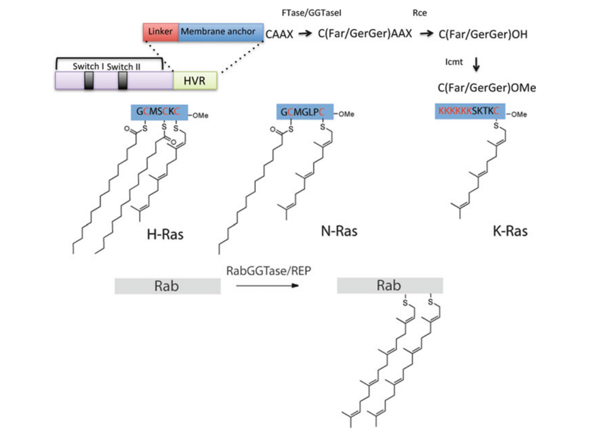
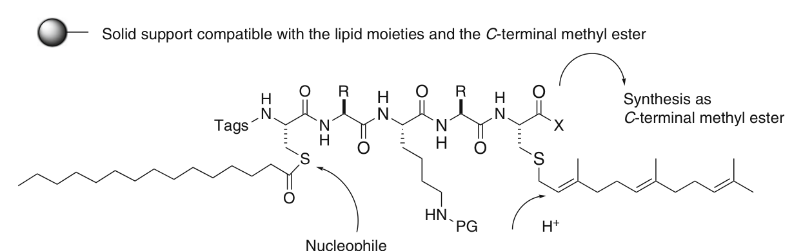
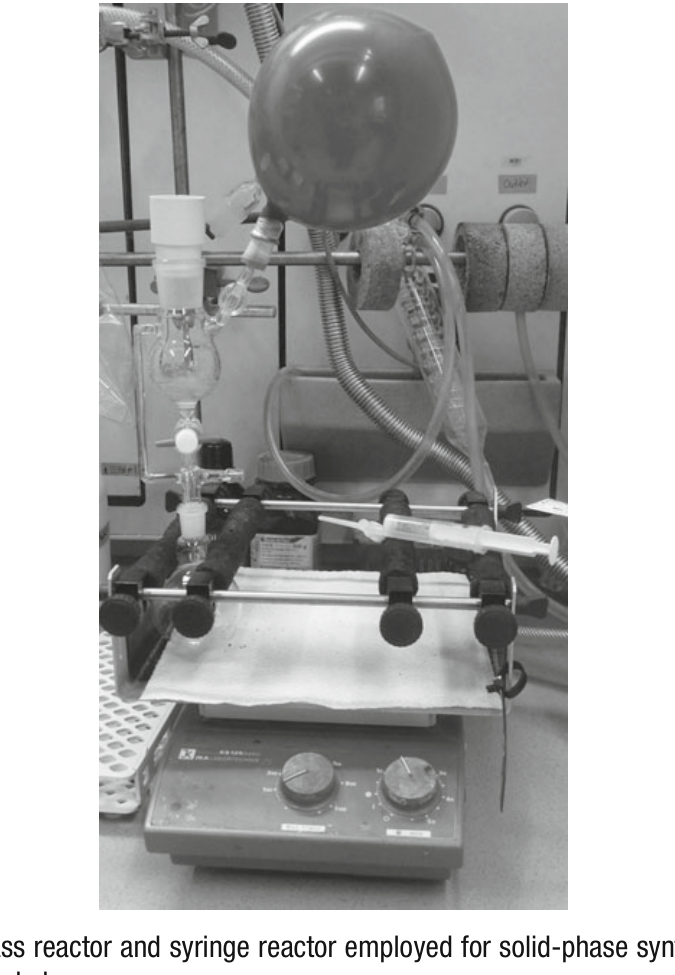
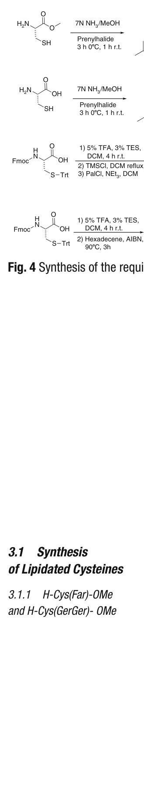
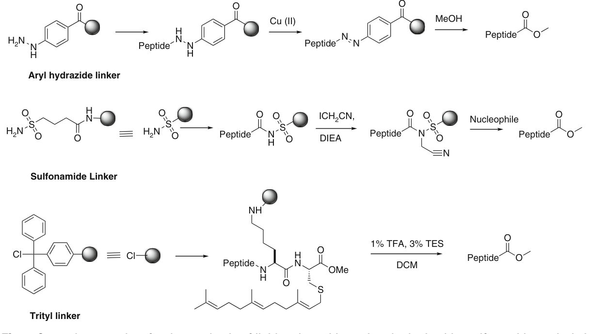
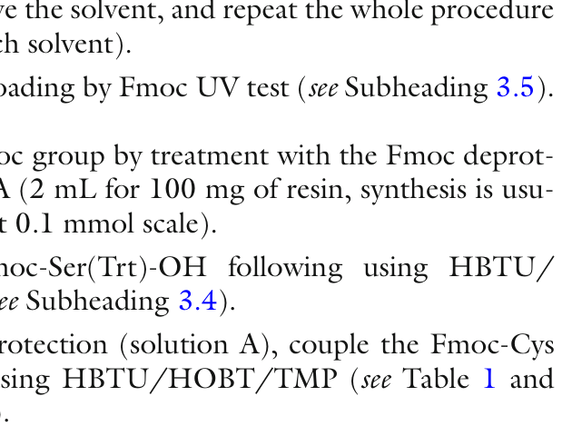
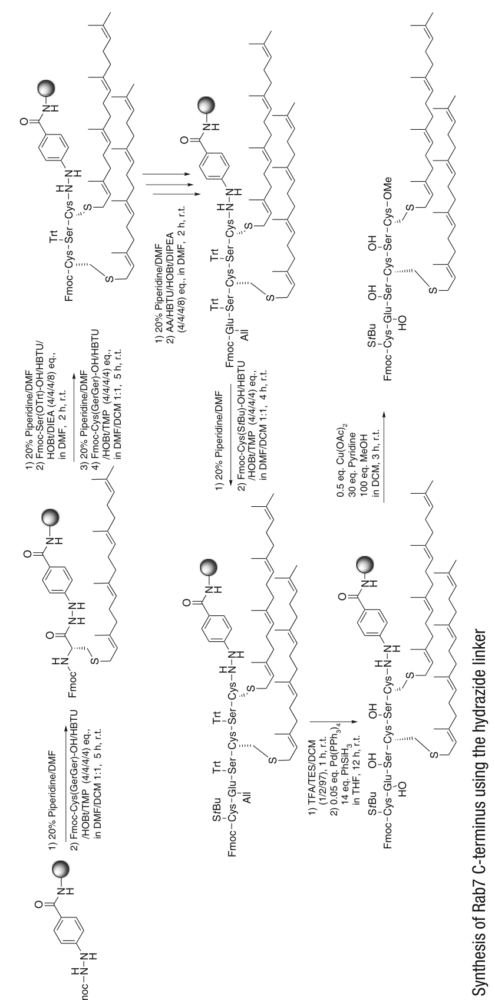
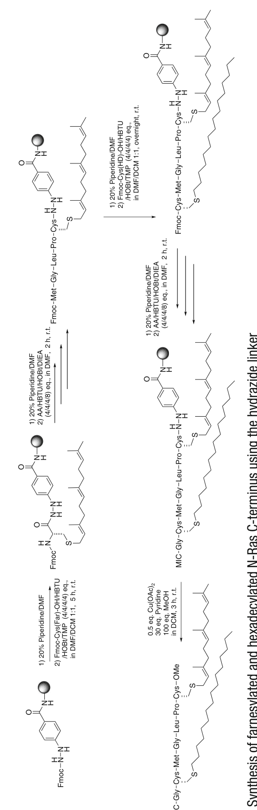
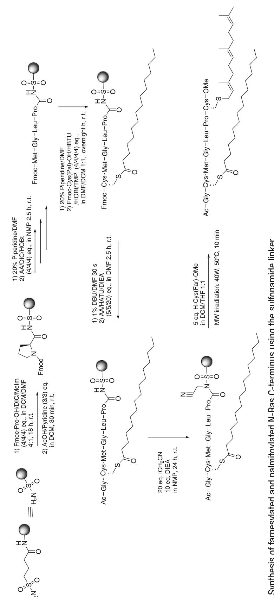
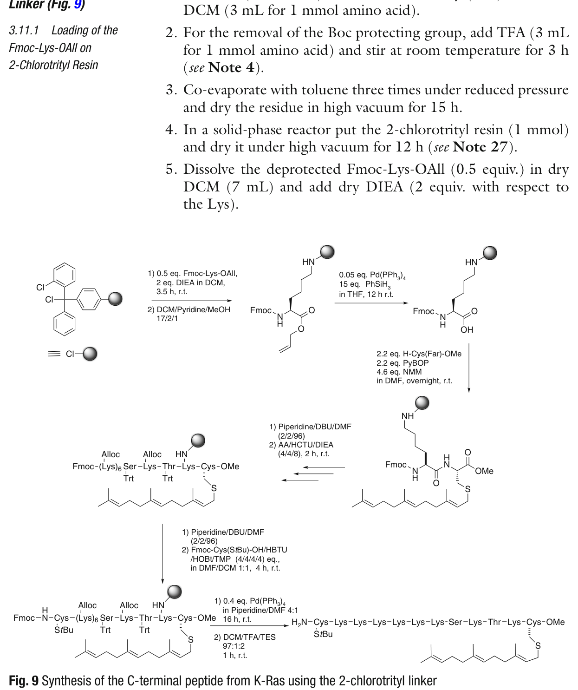

Chapter 12 Synthesis of Lipidated Peptides 脂质化肽的合成
译自：Methods in Molecular Biology, Vol. 1047 Peptide Synthesis and Applications (2nd Edition, 2013)
原作者：Federica Rosi & Gemma Triola
📚 翻译级别详细学习笔记 专业术语保留英文原文
人类蛋白质组 (human proteome) 相比人类基因组 (human genome) 具有更高的多样性和复杂性，其中一个主要原因在于翻译后修饰机器 (posttranslational machinery) 在蛋白质上引入了大量不同的功能基团。蛋白质翻译后共价附着化学基团的过程被称为翻译后修饰 (posttranslational modification, PTM)，它在控制蛋白质定位 (localization) 和活性 (activity) 方面起着至关重要的作用。
相关的修饰包括磷酸化 (phosphorylation)、羧甲基化 (carboxymethylation)、糖基化 (glycosylation)、乙酰化 (acetylation) 以及脂质化 (lipidation)。尽管这些修饰对蛋白质功能至关重要，但全修饰蛋白质 (fully posttranslationally modified proteins) 的合成一直是一项巨大的挑战。
然而，化学生物学 (chemical biology) 领域的重要进展使得全修饰肽和蛋白质的合成成为可能。由此，携带磷酸化氨基酸、C-端甲基化、脂质修饰或非天然标签 (non-natural tags) 的肽链已变得可以获取。这些肽段，以及利用连接技术 (ligation techniques) 获得的相应蛋白质，已成为生化 (biochemical) 和生物物理 (biophysical) 研究中不可或缺的工具。
作为这些进展的一个实例，本章描述了Ras和Rab家族脂质化肽的合成方法。
关键词 (Key words): Lipidated peptides（脂质化肽）、Farnesyl（法尼基）、Palmitoyl（棕榈酰基）、Ras、Rab
翻译后修饰(PTM)极大扩展了蛋白质组的多样性，脂质化(lipidation)是其中一种重要修饰
Ras和Rab家族蛋白是脂质化蛋白的典型代表，其脂质修饰对蛋白定位和功能至关重要
化学生物学的进步使全修饰肽/蛋白质的合成成为可能，为生化研究提供了有力工具
蛋白质可以通过共价附着脂质分子——如胆固醇 (cholesterol)、肉豆蔻酸 (myristic acid)、棕榈酸 (palmitic acid) 或异戊二烯基团 (isoprenoid groups)——进行翻译后修饰 [1, 2]。脂质化蛋白的相关实例包括Ras和Rab家族的成员，在这些蛋白中已经明确表明，脂质化不仅对控制蛋白质定位 (protein localization) 起关键作用，而且对其功能 (functioning) 也有着举足轻重的影响 [3, 4]。
Ras超家族 (Ras superfamily) 的小GTP酶 (small GTPases) 包含100多种不同的蛋白质，参与许多细胞信号传导过程 (cellular signalling processes)，调节细胞生长和增殖 (cell growth and proliferation)、细胞迁移 (cell motility) 以及囊泡运输 (vesicle transport) 等。
Ras成员表达时带有C端序列，称为CAAX盒 (CAAX box)，其中：
C = 半胱氨酸 (cysteine)
A = 任意脂肪族氨基酸 (aliphatic amino acid)
X = 任意氨基酸，决定连接到半胱氨酸上的异戊二烯基团类型 [5]
CAAX盒被异戊二烯基转移酶 (prenyl transferases) 识别：
法尼基转移酶 (farnesyltransferase, FTase)
牻牛儿基牻牛儿基转移酶 (geranylgeranyltransferase, GGTase)
分别连接15碳的法尼基 (farnesyl, Far) 或20碳的牻牛儿基牻牛儿基 (geranylgeranyl, GerGer) [6]。当X为Phe或Leu时，GerGer基团被连接到半胱氨酸上；在所有其他情况下，连接的是Far基团 [7]。
含有CAAX盒的蛋白质还会经历额外的修饰：
最后三个氨基酸被Ras转化酶 (Ras converting enzyme, Rce1) 切除
生成的C端半胱氨酸被异戊二烯半胱氨酸羧基甲基转移酶 (isoprenylcysteine carboxymethyl transferase, Icmt) 甲基化 [5]

图1 (Fig. 1) 含CAAX盒蛋白的C端加工过程及Ras (H-Ras, N-Ras, K-Ras) 和Rab蛋白的C端脂质化模式
与Ras蛋白不同，Rab蛋白缺乏C端CAAX盒，而是通过Rab牻牛儿基牻牛儿基转移酶 (Rab geranylgeranyltransferase, RabGGTase) 进行双牻牛儿基牻牛儿基化 (doubly geranylgeranylated)。该酶要求Rab蛋白预先与Rab escort蛋白 (Rab escorting protein, REP) 结合 [8]。
虽然异戊二烯基团 (isoprenoid moiety) 对定位至关重要，但通常不足以确保稳定的膜结合 (stable membrane association)。
在K-Ras亚型中，稳定的膜结合通过由八个赖氨酸组成的聚碱性序列 (polybasic sequence) 实现，这些赖氨酸与膜上存在的酸性磷脂 (acidic phospholipids) 特异性相互作用。
在其他情况下——如N-Ras或H-Ras亚型——需要第二个脂质化motif：这些蛋白在靠近异戊二烯化半胱氨酸的半胱氨酸残基上进一步被棕榈酰化 (palmitoylated)。半胱氨酸的棕榈酰化是一种可逆修饰，由蛋白酰基转移酶 (protein acyltransferases, PATs) 和酰基蛋白硫酯酶 (acyl protein thioesterases, APTs) 催化（图1）[9]。
制备量的脂质化蛋白将是研究此类蛋白参与过程的理想工具。然而，使用标准技术并不容易获得这些全修饰蛋白。在此背景下，化学生物学的重要进展使得通过截短表达蛋白 (truncated expressed proteins) 与脂质化肽的连接 (ligation) 来合成脂质化蛋白成为可能 [10, 11]。
合成这些脂质化肽时必须考虑以下重要因素：合成策略取决于诸多因素，如脂质基团的数量和性质、它们在肽链上的位置、肽链的长度、C端的性质，以及是否存在非天然基团（荧光基团或连接标签）。
已报道的许多实例依赖于不同的合成方法，如液相或固相策略，以及用于引入脂质基团的不同方法（通过对选择性脱保护氨基酸的脂质化，或通过使用脂质化建筑模块）。
在本研究组中，已开展了大量工作以建立高效的方法学，使合成包含所有所需功能基团的脂质化肽成为可能。过去十年中，在这方面取得了许多进展 [10, 12–21]。当前的方法主要基于使用固相策略和预先合成的脂质化氨基酸作为建筑模块来进行肽的合成。
特别是，已经开发了全翻译后修饰肽的合成策略，这些肽对应于Ras和Rab蛋白的C端。在这种特定情况下，需要考虑以下几个问题（图2）：

图2 (Fig. 2) 固相载体上脂质化肽合成的一般考虑因素
（1）所需的脂质化建筑模块必须先被合成。在某些情况下，需要开发新的脂质化半胱氨酸合成方法。
（2）异戊二烯基团 (prenyl groups) 对酸敏感 (acid sensitive)，且与氢解条件 (hydrogenolytic conditions) 不兼容。这影响了氨基酸保护基 (protecting groups) 的选择——因此需要在碱性或温和酸性条件下去除。同样的限制也适用于所使用的固相载体 (solid support)。
（3）棕榈酰基 (palmitoyl group) 对亲核攻击 (nucleophilic attack) 具有高反应性，一旦脱保护，棕榈酰基很容易发生S-到N-酰基迁移 (S- to N-acyl shift)。需要特定的方法来进行偶联以及N端Fmoc脱保护，以最大限度地减少副产物的形成。
（4）必须选择适当的固相载体，该载体必须与脂质基团兼容，并且能够在天然蛋白存在C端甲酯官能团时，提供所需肽的C端甲酯形式。
在接下来的页面中，将详细描述对应于Ras和Rab蛋白C端的脂质化肽的合成方法。首先展示所需建筑模块的合成，然后介绍不同的固相策略，用于合成多种单脂质化 (monolipidated)、双脂质化 (double lipidated)、标记 (labeled) 或不同功能化 (differently functionalized) 的肽链。
Ras超家族小GTP酶的C端CAAX盒经过异戊二烯基化（法尼基或牻牛儿基牻牛儿基）、蛋白酶切除和甲基化
Rab蛋白缺乏CAAX盒，通过RabGGTase进行双牻牛儿基牻牛儿基化
异戊二烯基化对膜定位必要但通常不充分，需要二次修饰（聚碱性序列或棕榈酰化）
脂质化肽合成的主要挑战：异戊二烯基团酸敏感、棕榈酰基硫酯易发生S→N酰基迁移、C端甲酯需求
当前策略核心：使用预合成的脂质化半胱氨酸建筑模块 + 固相多肽合成(SPPS)
氨基酸、树脂、所有试剂和溶剂均为市售商品 (commercially available)，如无特别说明，均直接使用无需进一步纯化。用于分析和纯化的水均通过MilliQ系统 (Millipore) 制取。
主要设备和仪器包括：

图3 (Fig. 3) 用于固相合成的玻璃反应器和注射器反应器（置于轨道振荡器上）
分析型LC-MS标准条件：检测波长210或260 nm；流速1.0 mL/min；总时间15 min；溶剂：A—0.1% HCOOH水溶液，B—0.1% HCOOH乙腈溶液；梯度：10% B保持1 min，10→100% B线性梯度10 min，100% B保持1 min，10% B保持3 min。
制备型HPLC标准条件：检测波长210或260 nm；流速25 mL/min；总时间30 min；溶剂：A—0.1% TFA水溶液，B—0.1% TFA乙腈溶液；梯度：10% B保持1 min，10→100% B线性梯度23 min，100% B保持2 min，10% B保持4 min。
甲醇 (Methanol)
正戊烷 (n-Pentane)
二氯甲烷 (Dichloromethane, DCM)
乙腈 (Acetonitrile)
甲苯 (Toluene)
N,N-二甲基甲酰胺 (Dimethylformamide, DMF)
N-甲基吡咯烷酮 (N-Methylpyrrolidone, NMP)
乙醚 (Diethyl ether)
磷钼酸 (Phosphomolybdic acid)（TLC显色液：5 g溶于100 mL无水乙醇）
氧化铝 (Aluminum oxide, alumina)
Fmoc N-羟基琥珀酰亚胺酯 (Fmoc-OSu)
三乙基硅烷 (Triethylsilane, TES)
三甲基氯硅烷 (Trimethylsilyl chloride, TMSCl)
棕榈酰氯 (Palmitoyl chloride)、法尼基氯 (farnesyl chloride)、牻牛儿基牻牛儿基氯 (geranylgeranyl chloride)
十六碳烯 (Hexadecene)
偶氮二异丁腈 (2,2′-Azobis(2-methylpropionitrile), AIBN)
溴酚蓝 (Bromophenol blue)
四(三苯基膦)合钯(0) (Tetrakis(triphenylphosphine)palladium(0), Pd(PPh₃)₄)
苯硅烷 (Phenylsilane, PhSiH₃)
乙酸铜(II) (Copper(II)acetate, Cu(OAc)₂)
硫酸镁 (Magnesium sulfate, MgSO₄)
1-甲基咪唑 (1-Methylimidazole, 1-MeIm)
碘乙腈 (Iodoacetonitrile)
四氢呋喃 (Tetrahydrofuran, THF)
N-甲基吗啉 (N-Methylmorpholine, NMM)
二氯乙烷 (Dichloroethane, DCE)
半胱氨酸盐酸盐一水合物 (Cysteine hydrochloride monohydrate)
H-Cys-OMe（半胱氨酸甲酯）
Fmoc-Cys(Trt)-OH、Fmoc-Cys(StBu)-OH、Fmoc-Ser(Trt)-OH、Fmoc-Glu(OAll)-OH、Fmoc-Pro-OH、Fmoc-Gly-OH、Fmoc-Lys(Boc)-OAll、Fmoc-Leu-OH、Fmoc-Met-OH
马来酰亚胺己酸 (Maleimide caproic acid)
HOBt (Hydroxybenzotriazole, 羟基苯并三唑)
HBTU (2-(1H-Benzotriazole-1-yl)-1,1,3,3-tetramethylaminium hexafluorophosphate)
HATU (2-(1H-7-Azabenzotriazol-1-yl)-1,1,3,3-tetramethylaminium hexafluorophosphate)
HCTU (2-(6-Chloro-1H-Benzotriazole-1-yl)-1,1,3,3-tetramethylaminium hexafluorophosphate)
PyBOP (Benzotriazole-1-yl-oxy-tris-pyrrolidino-phosphonium hexafluorophosphate)
DIC (N,N′-diisopropylcarbodiimide)
Fmoc-4-肼基苯甲酰 AM NovaGel树脂 (Novabiochem)
4-磺酰胺丁酰-AM树脂 (4-Sulfamylbutyryl-AM resin, Novabiochem)
2-氯三苯甲基氯树脂 (Chlorotrityl chloride resin, Novabiochem)
三氟乙酸 (Trifluoroacetic acid, TFA)
三乙胺 (Triethylamine)
哌啶 (Piperidine)
吡啶 (Pyridine)
乙酸 (Acetic acid)
氨的甲醇溶液 (Ammonia 7N in methanol)
可力丁 (Collidine, 2,4,6-trimethylpyridine, TMP)
DBU (1,8-Diazabicyclo[5.4.0]undec-7-ene)
DIEA (N,N′-Diisopropylethylamine)
核心仪器：反应瓶（带frit和侧臂）、轨道振荡器、微波反应器、分析/制备型LC-MS/HPLC
关键树脂：Fmoc-4-肼基苯甲酰树脂(hydrazide linker)、4-磺酰胺丁酰树脂(sulfonamide linker)、2-氯三苯甲基氯树脂(trityl linker)
关键活化剂：HBTU、HATU、HCTU、PyBOP、DIC（均为多肽偶联试剂）
特殊试剂：脂质氯（法尼基氯、牻牛儿基牻牛儿基氯、棕榈酰氯）、AIBN（自由基引发剂）、碘乙腈（磺酰胺linker烷基化）
本研究组已建立了多种方法用于合成Ras和Rab蛋白C端对应的脂质化肽。最直接的策略依赖于固相多肽合成 (solid-phase peptide synthesis, SPPS) 方法和Fmoc保护的脂质化半胱氨酸。这些方法使我们能够在短时间内以高纯度和良好收率获得所需的肽段——包括天然和非天然修饰。已研究了不同的连接基 (linker)，以匹配所需肽段的要求。以下将以Rab7、N-Ras和K-Ras C端肽段为实例，概述不同的应用方法。
在开始固相脂质化肽合成之前，必须先制备带有不同脂质修饰的Fmoc保护半胱氨酸建筑模块。
异戊二烯化半胱氨酸（法尼基化或牻牛儿基牻牛儿基化）可以制备成两种不同版本：Fmoc保护的半胱氨酸或游离氨基的半胱氨酸甲酯 [19]。使用哪种版本取决于合成设计，将在下文说明。
其他必要的建筑模块——棕榈酰化半胱氨酸以及其不可水解类似物Fmoc-Cys(HD)-OH（其中不稳定的硫酯被更稳定的硫醚替代）——则以不同方式合成。
Fmoc-Cys(Pal)-OH由Fmoc-Cys(Trt)-OH制备，在去除三苯甲基 (trityl) 后与相应的棕榈酰氯反应 [19]。Fmoc-Cys(HD)-OH则通过硫醇-烯反应 (thiol-ene reaction) 替代获得，使用相应的硫醇和长链烯烃，以AIBN作为自由基引发剂 (radical initiator)（图4）[22]。

图4 (Fig. 4) 所需脂质化半胱氨酸建筑模块的合成路线
操作步骤：
在烧瓶中（见Note 1），将半胱氨酸盐酸盐一水合物或半胱氨酸甲酯 (5.7 mmol) 溶于甲醇 (11 mL) 中，冷却至0°C，在惰性气氛下保持。缓慢搅拌加入7N氨的甲醇溶液 (15 mL)（见Notes 2和3）。
向制备好的溶液中加入异戊二烯卤代物 (prenyl halide, 1 equiv.)，0°C搅拌3 h，室温搅拌1 h。
减压蒸去溶剂。
用正戊烷 (3 × 50 mL) 洗涤固体残留物。
用硅胶柱色谱纯化粗产物，使用0–3%甲醇/DCM梯度洗脱，通过TLC（UV灯或显色液）检测纯化馏分。
蒸发含产物的馏分，得到淡黄色油状物，通过¹H-NMR和LC-MS确证身份。
操作步骤：
在烧瓶中，将半胱氨酸盐酸盐一水合物或半胱氨酸甲酯 (5.7 mmol) 溶于甲醇 (11 mL)，冷却至0°C，惰性气氛下保持。缓慢搅拌加入7N氨的甲醇溶液 (15 mL)。
加入异戊二烯卤代物 (1 equiv.)，0°C搅拌3 h，室温搅拌1 h。
减压蒸去溶剂。
用正戊烷 (3 × 50 mL) 洗涤固体残留物。
将残留物置于圆底烧瓶中，加入DCM (50 mL)。
冷却至0°C，加入三乙胺 (0.88 mL, 6.28 mmol) 和Fmoc-OSu (2.12 g, 6.28 mmol)。
室温搅拌过夜。通过TLC（甲醇/DCM 1:9）检测反应完成度。
减压蒸去溶剂。
硅胶柱色谱纯化：Fmoc-Cys(Far)-OH用0–3%甲醇/DCM梯度；Fmoc-Cys(GerGer)-OH用0–10%甲醇/DCM梯度。TLC（UV灯或显色液）检测纯化馏分。
蒸发含产物的馏分，得到淡黄色油状物，通过¹H-NMR和LC-MS确证身份。
操作步骤：
在圆底烧瓶中，将Fmoc-Cys(Trt)-OH (2 g, 3.4 mmol) 溶于DCM (50 mL)，惰性气氛下保持。
向搅拌的溶液中加入三氟乙酸 (TFA) (2.5 mL) 和三乙基硅烷 (TES) (1.5 mL)。
室温搅拌4 h，惰性气氛下进行。
加入甲苯 (15 mL)，减压共蒸（见Note 5）。重复三次，每次蒸干。
将固体残留物转入烧结漏斗，用正戊烷洗涤五次（5 mL/mmol起始半胱氨酸），以去除释放的三苯甲烷 (triphenylmethane)。
将剩余固体转入圆底烧瓶，溶于DCM (25 mL/g残留物)。安装水冷凝管。
加入三甲基氯硅烷 (TMSCl) (0.48 mL, 3.7 mmol)，回流2 h。
冷却至室温。
加入棕榈酰氯 (3.1 mL, 10.2 mmol)。
移除冷凝管，安装滴液漏斗。在3 h内滴加三乙胺 (0.78 mL, 5.6 mmol) 的DCM (15 mL) 溶液。
室温、惰性气氛下搅拌1 h。通过TLC（甲醇/DCM 1:9）检测反应完成度。
减压蒸去溶剂，硅胶快速柱色谱纯化（0–5%甲醇/DCM梯度）。TLC检测。
蒸发含产物的馏分，得到淡黄色油状物，通过¹H-NMR和LC-MS确证身份。
Fmoc-Cys(HD)-OH是棕榈酰化半胱氨酸的不可水解类似物，其中不稳定的硫酯键被更稳定的硫醚键替代。通过硫醇-烯反应 (thiol-ene reaction) 合成。
操作步骤：
在圆底烧瓶中，将Fmoc-Cys(Trt)-OH (2 g, 3.4 mmol) 溶于DCM (50 mL)，惰性气氛下保持。
加入TFA (2.5 mL) 和TES (1.5 mL)。
室温搅拌4 h，惰性气氛下进行。
加入甲苯 (15 mL)，减压共蒸。重复三次。
将固体残留物转入烧结漏斗，用正戊烷洗涤五次。
在超声波浴中、氩气流下对二氯乙烷 (DCE) 脱气15 min。
将残留固体转入圆底烧瓶，溶于脱气DCE。安装水冷凝管。
加入十六碳烯 (3 equiv.) 和AIBN (0.5 equiv.)，90°C回流3 h（见Note 8）。通过TLC（10%甲醇/DCM）检测反应完成度。
冷却至室温，减压蒸去溶剂。
硅胶快速柱色谱纯化（0–4%甲醇/DCM梯度）。TLC检测。
⚠️ 关键区别：Fmoc-Cys(Pal)-OH含有不稳定的硫酯键 (thioester)，容易发生亲核攻击和S→N酰基迁移；而Fmoc-Cys(HD)-OH使用稳定的硫醚键 (thioether)，通过自由基硫醇-烯反应构建，更适合需要在碱性条件下进行的合成步骤。
两类异戊二烯化半胱氨酸：Fmoc保护版(Fmoc-Cys(Far/GerGer)-OH)和甲酯版(H-Cys(Far/GerGer)-OMe)，用途不同
合成路径：半胱氨酸（或甲酯）→ 氨/甲醇中与异戊二烯卤代物反应 → [可选] Fmoc-OSu保护
棕榈酰化半胱氨酸Fmoc-Cys(Pal)-OH：先去Trt → TMSCl活化 → 棕榈酰氯酰化（含不稳定硫酯）
十六烷基化半胱氨酸Fmoc-Cys(HD)-OH：去Trt后通过thiol-烯反应(AIBN/十六碳烯)构建稳定硫醚
AIBN是自由基引发剂，需小心操作（可能爆炸）
如上所述，为脂质化肽合成所选的连接基 (linker) 至关重要。高浓度酸在合成过程中或从固相载体上释放肽时应当避免，以保持异戊二烯基团的完整性。当存在棕榈酰基时，应使用不同的Fmoc脱保护和氨基酸偶联条件，以最大限度地减少对硫酯的亲核攻击以及S→N酰基迁移。最后，连接基应能够在天然序列存在C端甲酯时提供C端甲酯形式的肽段。
能满足所有这些要求的连接基并不多。其中包括肼连接基 (hydrazide linker) 和磺酰胺连接基 (sulfonamide linker)。两种连接基在酸性和碱性条件下均稳定，允许肽的合成及其从固相载体上的正交释放 (orthogonal release)。
肼连接基 (Hydrazide linker)：肽通过氧化裂解 (oxidative cleavage) 获得释放。首先将肼氧化为酰肼，然后以甲醇作为亲核试剂释放带有C端甲酯的肽 [18]。
磺酰胺连接基 (Sulfonamide linker)：第一个氨基酸的偶联生成酰基磺酰胺 (acyl sulfonamide)，在酸或碱条件下稳定，直到被卤代乙腈 (haloacetonitriles) 选择性烷基化后，才变得容易受亲核攻击而从固相载体上释放肽。然而，由于在催化量DMAP存在下半胱氨酸残基会发生消旋化 (racemization)，不能使用甲醇作为亲核试剂。替代方案是：将第二个C端氨基酸固定在固相载体上，然后利用H-Cys(Far)-OMe的氨基作为亲核试剂释放肽 [21]。
另一种成功应用于脂质化肽合成的连接基是三苯甲基连接基 (trityl linker)，它通过低浓度酸 (1% TFA) 处理即可提供所需肽段，且不影响异戊二烯基团的完整性。该连接基的主要缺点是只能以游离酸 (free acid) 形式提供肽段。为了获得C端甲酯官能团，可以将第二个C端氨基酸通过侧链功能基固定在固相载体上。在引入所需的异戊二烯化半胱氨酸甲酯后，即可正常延伸肽链并从固相载体上释放（图5）[23]。

图5 (Fig. 5) 使用肼连接基、磺酰胺连接基和三苯甲基连接基合成脂质化肽的一般策略
下面将详细描述一些实例。使用肼连接基描述对应于Rab7 [24] 或N-Ras C端序列的肽段。类似地，使用Ellman磺酰胺连接基描述双脂质化N-Ras肽的合成。最后，使用三苯甲基连接基描述K-Ras C端对应肽的合成。
两种连接基之间的细微差异需要考虑：肼连接基要求使用脱气溶剂和试剂，以避免在肽释放前发生氧化，从而导致收率降低。磺酰胺连接基在加载第一个氨基酸时，避免消旋化在某些特定情况下可能是一个问题，需要仔细选择适当的条件 [25]。此外，肽的释放是一个两步过程，可能需要超过24小时，且侧链保护基的去除需在肽从固相载体释放后进行。
肼连接基(hydrazide linker)：氧化裂解释放肽，甲醇为亲核试剂可得C端甲酯；需脱气溶剂
磺酰胺连接基(sulfonamide linker)：需ICH₂CN烷基化活化后亲核裂解；不能用MeOH（消旋化风险）
三苯甲基连接基(trityl linker)：1% TFA温和释放，仅得游离酸；可通过侧链固定策略获得甲酯
选择linker取决于目标肽的C端要求、脂质基团类型和合成策略
本章描述了三种Fmoc脱保护溶液，适用于不同场景：
用Fmoc脱保护溶液A处理树脂（2 mL/100 mg树脂），轻柔振荡10 min。
过滤去除溶液，重复操作一次。
去除溶液，用DMF洗涤树脂（2 mL/100 mg树脂，振荡5 min，去除溶剂，重复五次）。
用Fmoc脱保护溶液B处理树脂（2 mL/100 mg树脂），振荡30秒。
去除溶液，用DMF洗涤树脂（2 mL/100 mg树脂，振荡1 min，去除溶剂，重复三次）。
⚠️ 溶液B（DBU）特别适用于棕榈酰化半胱氨酸之后的Fmoc脱保护。DBU脱保护速度快（30秒），可最大限度地减少S→N酰基迁移的发生。脱保护后应立即使用HATU快速偶联下一个氨基酸。
用Fmoc脱保护溶液C处理树脂两次（2 mL/100 mg树脂），振荡10 min。
去除溶液，用DMF洗涤树脂（2 mL/100 mg树脂，振荡5 min，去除溶剂，重复五次）。
💡 溶液C（DBU+哌啶混合液）对于聚碱性肽如K-Ras的Fmoc去除更为高效。
在圆底烧瓶中配制0.4 M氨基酸的DMF溶液（4 equiv.相对于树脂载量）（见Note 1）。
按顺序加入：HBTU (4 equiv.)、HOBt (4 equiv.) 和DIEA (8 equiv.)，室温搅拌。
将此溶液加入树脂（见Note 9），室温振荡2 h。
过滤去除溶液，依次用DMF、DCM和DMF洗涤树脂（2 mL/100 mg树脂，振荡2 min，去除溶剂，每种溶剂重复三次）。
配制0.4 M氨基酸的DCM/DMF (7:1 v/v) 溶液（5 equiv.相对于树脂载量）。
加入HATU (5 equiv.) 和DIEA (20 equiv.)，室温搅拌5 min预活化。
加入树脂，振荡2 h。
过滤去除溶液，用DMF洗涤（2 mL/100 mg树脂，振荡2 min，重复五次）。
在圆底烧瓶中配制0.4 M氨基酸的DMF溶液（4 equiv.）。
加入HCTU (4 equiv.) 和DIEA (8 equiv.)，室温搅拌。
加入树脂，室温振荡2 h。
过滤去除溶液，用DMF和DCM各洗涤五次。
在圆底烧瓶中配制0.4 M氨基酸的NMP溶液（4 equiv.）。
加入DIC (4 equiv.) 和HOBt (4 equiv.)，室温搅拌。
加入树脂，室温振荡2.5 h。
过滤去除溶液，用DMF和DCM各洗涤五次。
脂质化半胱氨酸的偶联需要特殊条件。使用2,4,6-三甲基吡啶 (collidine, TMP) 替代DIEA作为碱，以最大限度地减少半胱氨酸的消旋化 (racemization) [26]。
配制Fmoc保护半胱氨酸（见表1用量）的DCM/DMF 1:1溶液（4 mL/100 mg树脂）。
按顺序加入HBTU、HOBt和TMP（见表1用量），室温搅拌2 min。
加入树脂，室温振荡适当时间。
过滤去除溶液，用DMF和DCM洗涤五次（2 mL/100 mg树脂，每次2 min）。

表1 (Table 1) 脂质化半胱氨酸建筑模块的HBTU/HOBt/TMP偶联条件
表1关键信息解读：
Fmoc-Cys(Far)-OH：HBTU/HOBt/TMP (4:4:4)，DCM/DMF (1:1)，反应5 h
Fmoc-Cys(Pal)-OH：相同试剂比例，过夜反应（因棕榈基疏水性更强）
Fmoc-Cys(StBu)-OH：4 h反应
Fmoc-Cys(HD)-OH：过夜反应
1. 称取两份3 mg干燥的已载载树脂，记录精确重量。 2. 参见第2章 (Chapter 2) 的载量测定方案。
1. 偶联步骤的完整性可用溴酚蓝试验 (bromophenol blue test) 监测。注意：必须通过充分洗涤去除所有DIEA和TMP的痕迹，以获得可靠结果（见Note 12）。 2. 如果偶联反应不完全，建议进行第二次偶联。引入脂质化半胱氨酸后特别推荐双偶联 (double coupling)。
1. 称取10–20 mg干燥树脂（见Note 13）。 2. 将树脂放入注射器反应器，用2 mL DCM溶胀20 min。 3. 去除溶剂，用适当的裂解混合液处理树脂（见后续各节的详细条件）。 4. 收集溶液于烧瓶中，蒸去溶剂（如含TFA，始终与甲苯共蒸，见Note 5）。 5. 通过分析型反相LC-MS分析释放的肽段。
三种Fmoc脱保护溶液：A(20%哌啶/DMF)、B(1% DBU/DMF, 30秒)、C(2%DBU+2%哌啶/DMF)
溶液B用于棕榈酰化Cys后快速脱保护以避免S→N酰基迁移
脂质化Cys偶联使用TMP(可力丁)替代DIEA以减少消旋化
不同脂质化Cys偶联时间不同：Far 5h、Pal过夜、StBu 4h、HD过夜
溴酚蓝试验监测偶联完整性；脂质化Cys后推荐双偶联
本节描述使用Fmoc-4-肼基苯甲酰 AM NovaGel树脂 (Fmoc-4-hydrazinobenzoyl AM NovaGel resin) 合成Rab7蛋白C端脂质化肽的方法。初始载量为0.40–0.70 mmol/g（见Note 14）。

图6 (Fig. 6) 使用肼连接基合成Rab7 C端肽
在反应瓶中，用干燥DCM溶胀树脂（2–3 mL/100 mg树脂）10 min。
过滤去除DCM，用干燥DCM和DMF各洗涤两次。
用Fmoc脱保护溶液A去除Fmoc基团。
用HBTU/HOBT/TMP偶联Fmoc-Cys(GerGer)-OH（见表1和3.4节）。
到达反应时间后，去除溶剂，用DMF、DCM和DMF各洗涤五次。
通过Fmoc UV测试测定载量（见3.5节）。
Rab7 C端肽的氨基酸序列为：Cys(GerGer)-Ser-Cys(GerGer)-Ser-Glu(OAll)-Cys(StBu)。肽链从C端向N端依次延伸。
用Fmoc脱保护溶液A去除Fmoc基团。
用HBTU/HOBt/DIEA偶联Fmoc-Ser(Trt)-OH。
Fmoc脱保护后，用HBTU/HOBT/TMP偶联Fmoc-Cys(GerGer)-OH。
Fmoc脱保护后，依次偶联Fmoc-Ser(Trt)-OH和Fmoc-Glu(OAll)-OH（使用HBTU/HOBt/DIEA）。
Fmoc脱保护后，用HBTU/HOBT/TMP偶联Fmoc-Cys(StBu)-OH。
Ser(Trt)的去保护：用含1% TFA和2% TES的DCM溶液处理含保护肽的树脂，振荡1 h（见Note 15）。
去除溶剂，用DCM、DMF和DCM各洗涤五次。
Glu(OAll)的烯丙基去保护：配制含PhSiH₃ (14 equiv.)、Pd(PPh₃)₄ (0.05 equiv.) 的THF溶液(30 mL/mmol已载氨基酸)。加入树脂，室温惰性气氛下振荡12 h。
用THF充分洗涤棕色树脂（见Note 17），再用DCM、DMF和DCM各洗涤五次。
高真空干燥数小时，进行试裂解。
氧化裂解是肼连接基释放肽段的关键步骤。Cu(OAc)₂作为氧化剂，甲醇作为亲核试剂，在氧气气氛下进行反应，生成C端甲酯。
配制Cu(OAc)₂ (0.5 equiv.) 和吡啶 (30 equiv.) 的DCM溶液，含亲核试剂甲醇 (100 equiv.)。
用此溶液处理树脂，氧气气氛下振荡3 h（见Note 18）。
过滤收集溶液，与甲苯共蒸减压浓缩。
用甲苯洗涤残留物，每次蒸干。
将残留物溶于DCM，用0.1 M HCl水溶液洗涤。有机相用MgSO₄干燥、过滤、减压蒸干。
用硅胶短柱纯化（0–5%甲醇/DCM梯度），或用C4柱制备型HPLC纯化，LC-MS确证身份。
使用肼连接基树脂，C端通过氧化裂解(Cu(OAc)₂/Py/MeOH)释放为甲酯
肽序：Cys(GerGer)-Ser-Cys(GerGer)-Ser-Glu-Cys(StBu)，含双牻牛儿基牻牛儿基化
侧链保护基去除：Ser(Trt)用1% TFA/DCM，Glu(OAll)用Pd(PPh₃)₄/PhSiH₃
使用肼树脂时所有溶剂需脱气处理，反应在氩气下进行
Pd(PPh₃)₄质量关键——降解变棕色则无效
N-Ras C端肽含有法尼基化和十六烷基化两种脂质修饰。使用肼连接基策略合成，序列为：Cys(Far)-Pro-Leu-Gly-Met-Cys(HD)-Gly，以甲酯结尾。

图7 (Fig. 7) 使用肼连接基合法尼基化和十六烷基化N-Ras C端肽的合成
在固相反应器中，放入Fmoc-4-肼基苯甲酰树脂 (1 mmol)，用DCM溶胀10 min。
过滤去除DCM，用DCM和DMF各洗涤两次。
用Fmoc脱保护溶液A去除Fmoc基团。
用HBTU/HOBt/TMP偶联Fmoc-Cys(Far)-OH（见表1和3.4节）。
反应完成后，过滤去除溶液，用DMF、DCM和DMF各洗涤五次。
用脱保护溶液A去除半胱氨酸上的Fmoc基团。
用HBTU/HOBt/DIEA偶联相应的氨基酸。
按照脱保护/偶联循环延伸肽链。
用HBTU/HOBt/TMP偶联Fmoc-Cys(HD)-OH（见表1）。
反应完成后，用DMF、DCM和DMF各洗涤五次。
高真空干燥数小时，进行试裂解。
与Rab7的氧化裂解类似，但添加了乙酸 (50 equiv.) 以改善裂解效果。
配制Cu(OAc)₂ (0.5 equiv.)、吡啶 (30 equiv.)、乙酸 (50 equiv.) 和甲醇 (215 equiv., 5 mL/100 mg树脂) 的溶液。
加入树脂，氧气气氛下振荡3 h。
过滤收集溶液，与甲苯共蒸。
溶于DCM，用0.1% HCl水溶液洗涤。有机相用MgSO₄干燥、过滤、减压蒸干。
硅胶短柱纯化（0–5%甲醇/DCM梯度）或C4柱制备型HPLC纯化。
N-Ras C端含双脂质修饰：法尼基(C15)和十六烷基(不可水解棕榈酰类似物)
肽序：Cys(Far)-Pro-Leu-Gly-Met-Cys(HD)-Gly-OMe
使用Fmoc-Cys(HD)-OH替代Fmoc-Cys(Pal)-OH，避免硫酯不稳定问题
氧化裂解中额外加入乙酸以改善效果
本节描述使用Ellman磺酰胺连接基 (sulfonamide linker) 合成法尼基化和棕榈酰化双脂质修饰N-Ras C端肽。4-磺酰胺丁酰-AM树脂 (4-Sulfamylbutyryl-AM resin) 初始载量1.1 mmol/g。此策略的关键特点是使用棕榈酰化半胱氨酸（含不稳定硫酯）和H-Cys(Far)-OMe作为亲核试剂进行裂解。

图8 (Fig. 8) 使用磺酰胺连接基合成法尼基化和棕榈酰化N-Ras C端肽
由于磺酰胺连接基的特殊性，不能直接以常规方式加载第一个氨基酸。此处采用将第二个C端氨基酸（Fmoc-Pro-OH）通过侧链方式加载的策略。
称取0.1 mmol树脂放入注射器反应器。加入DCM溶胀15 min。
去除溶剂，用DCM洗涤两次。
在配备磁力搅拌子的烧瓶中，将Fmoc-Pro-OH (0.4 mmol) 溶于DCM/DMF 4:1 (v/v)（终浓度0.4 M）。
加入1-MeIm (0.4 mmol) 和DIC (0.4 mmol)，室温惰性气氛下搅拌2 min（见Note 19）。
将溶液加入树脂，振荡18 h。
过滤去除溶液，用DMF和DCM各洗涤五次。
用含乙酸 (3 equiv.) 和吡啶 (3 equiv.) 的DCM溶液处理树脂，振荡30 min。
用DCM和DMF各洗涤五次。
用Fmoc脱保护溶液A进行Fmoc UV载量测定（见Note 20）。
💡 平均载量约0.6 mmol/g（见Note 20）。
注意：磺酰胺连接基不兼容HBTU/HOBt/DIEA的通用偶联条件（可能因磺酰胺基团与HBTU在碱性条件下发生副反应导致偶联不完全）。因此使用DIC/HOBt替代进行肽链延伸（见Note 21）。
用Fmoc脱保护溶液A处理树脂，振荡30 min。
去除溶液，DMF洗涤五次。
在搅拌烧瓶中，将氨基酸 (4 equiv.) 溶于NMP。
加入DIC (4 equiv.) 和HOBt (4 equiv.)，搅拌2 min。
加入树脂，室温振荡2.5 h。
用DMF、DCM和DMF各洗涤五次。
对每个氨基酸重复步骤1–6。
用HBTU/HOBt/TMP偶联Fmoc-Cys(Pal)-OH（见表1）。
用DMF充分洗涤树脂。
配制Fmoc-Gly-OH (5 equiv.)、HATU (5 equiv.) 和DIEA (20 equiv.) 的DMF溶液，搅拌5 min。
Fmoc-Cys(Pal)-OH的Fmoc去保护：使用DBU/DMF溶液（脱保护溶液B）。
立即加入预活化的氨基酸溶液，振荡3 h（快速偶联以避免S→N酰基迁移）。
Fmoc去保护再次使用溶液B。
用乙酸 (5 equiv.)、HATU (5 equiv.) 和DIEA (20 equiv.) 的DMF溶液进行N端乙酰化，振荡3 h。
⚠️ 棕榈酰化半胱氨酸的关键操作：偶联Fmoc-Cys(Pal)-OH后，Fmoc脱保护必须用DBU(溶液B)快速完成(30秒)，随后立即用HATU预活化的氨基酸溶液快速偶联(3 h)。这一系列操作旨在最大限度地减少游离α-氨基对棕榈酰硫酯的亲核攻击及S→N酰基迁移。双偶联在引入脂质化半胱氨酸后强烈推荐——双脂质化肽的高疏水性使得缺失序列难以通过HPLC分离。
N-酰基磺酰胺 (N-acyl sulfonamide) 在酸碱条件下高度稳定。当被N-烷基化后，这种稳定性丧失，C端酰基变得容易受亲核攻击。因此裂解分两步进行：树脂烷基化 → 亲核攻击肽的C端位置释放肽。
在配备磁力搅拌子的圆底烧瓶中，将碘乙腈 (iodoacetonitrile, 20 equiv.) 和DIEA (10 equiv.) 溶于无水NMP。
通过碱性氧化铝柱过滤该溶液（见Note 25）。
用NMP处理树脂振荡2 min，去除溶剂，重复三次。
加入过滤好的碘乙腈/DIEA/NMP溶液。
惰性气氛、避光（铝箔包裹）下振荡24 h。
过滤去除溶剂，依次用无水NMP和无水DCM各洗涤五次，再用无水THF洗涤三次（见Note 26）。
高真空干燥数小时。
裂解使用H-Cys(Far)-OMe作为亲核试剂，在微波辅助下进行。这一步将肽从树脂上释放，同时安装C端的法尼基化半胱氨酸甲酯。
配制H-Cys(Far)-OMe (5 equiv.) 的DCM/THF 1:1溶液 (3 mL/100 mg树脂)。
将树脂置于微波反应容器中，加入半胱氨酸溶液。
微波照射：初始功率40W，50°C，10 min。
过滤去除含目标肽的溶剂，用THF洗涤三次，DCM洗涤三次。
收集所有溶剂，减压蒸干。
用C4柱制备型反相HPLC纯化，LC-MS确证身份。
磺酰胺连接基策略适用于含棕榈酰化(不稳定硫酯)肽的合成
第一个氨基酸加载使用DIC/MeIm条件以减少消旋化
肽链延伸使用DIC/HOBt（不用HBTU——与磺酰胺基团不兼容）
棕榈酰化Cys后：DBU快速脱保护→HATU快速偶联（避免S→N酰基迁移）
N-烷基化(ICH₂CN)→微波辅助亲核裂解(H-Cys(Far)-OMe)两步释放肽
N端通过AcOH/HATU/DIEA乙酰化封端
K-Ras4B C端肽的特点是含有聚碱性序列（六个连续赖氨酸）和法尼基化半胱氨酸甲酯。由于不存在棕榈酰基，可以使用较温和的酸敏感性2-氯三苯甲基连接基 (2-chlorotrityl linker)。初始树脂载量0.7 mmol/g。
合成策略：通过赖氨酸侧链羧基将第二个C端氨基酸固定在固相载体上，然后偶联H-Cys(Far)-OMe（以甲酯形式），再延伸肽链。

图9 (Fig. 9) 使用2-氯三苯甲基连接基合成K-Ras C端肽
首先需要制备Fmoc-Lys-OAll（去除Boc保护基），然后通过其侧链羧基加载到树脂上。
在烧瓶中，将Fmoc-Lys(Boc)-OAll溶于DCM (3 mL/mmol氨基酸)。
加入TFA (3 mL/mmol氨基酸)，室温搅拌3 h去除Boc保护基。
与甲苯共蒸三次，高真空干燥残留物15 h。
在固相反应器中放入2-氯三苯甲基树脂 (1 mmol)，高真空干燥12 h（见Note 27）。
将脱保护的Fmoc-Lys-OAll (0.5 equiv.) 溶于干燥DCM (7 mL)，加入干燥DIEA (2 equiv.)。
树脂溶胀：加入干燥DCM，惰性气氛下轻柔振荡20 min。
去除溶剂，加入Fmoc-Lys-OAll溶液，氩气下振荡3.5 h。
过滤去除溶液，用DCM/MeOH/DIEA (17:2:1) 处理三次（每次3 min，使用无水溶剂）（见Note 28），封闭未反应基团。
去除溶液，用DCM、DMF和DCM各洗涤五次。
通过UV Fmoc测试测定载量。此步骤的平均载量为0.3 mmol/g（见Note 29）。
配制含PhSiH₃ (14 equiv.)、Pd(PPh₃)₄ (0.05 equiv.) 的THF溶液 (30 mL/mmol已载氨基酸)。
加入已载树脂，室温惰性气氛下振荡12 h。
用THF（见Note 17）、DCM、DMF和DCM充分洗涤棕色树脂。
将法尼基化半胱氨酸甲酯偶联到赖氨酸的侧链羧基上，形成C端甲酯。使用PyBOP/NMM作为活化体系。
将H-Cys(Far)-OMe (2.2 equiv.) 和PyBOP (2.2 equiv.) 溶于DMF和NMM (4.6 equiv.) 的混合液。
加入树脂，室温振荡过夜。
用DMF、DCM和DMF充分洗涤五次。
高真空干燥数小时，进行试裂解。
K-Ras4B C端序列富含赖氨酸（聚碱性区），使用HCTU/DIEA偶联体系，每个氨基酸双偶联以确保收率。
用Fmoc脱保护溶液C（2% DBU + 2%哌啶/DMF）处理两次（见Note 30），振荡10 min。
用DMF、DCM和DMF各洗涤五次。
使用HCTU/DIEA通用条件偶联所有氨基酸，每个氨基酸双偶联（见Note 31）。
用DCM洗涤树脂并干燥过夜。
Lys(Alloc)和N端Fmoc的同时去保护：配制Pd(PPh₃)₄ (0.4 equiv.) 的DMF/哌啶 1:4溶液。
处理树脂，惰性气氛下振荡16 h。
过滤去除溶液，用DMF、DCM和甲醇各洗涤五次。
高真空干燥数小时，进行试裂解。
从2-氯三苯甲基树脂上释放肽使用低浓度TFA（1% TFA + 2% TES/DCM），不影响法尼基基团的完整性。
用1% TFA + 2% TES的DCM溶液 (7 mL/100 mg树脂) 处理树脂，振荡1 h（见Note 15）。
收集溶剂于烧瓶中，用DCM、DCM/MeOH 1:1和甲醇洗涤树脂。
与甲苯共蒸三次（见Note 15）。
将粗品溶于少量甲醇，加入冷乙醚。
离心沉淀，溶于水，液氮冷冻，冻干 (lyophilize)。
用C18柱制备型HPLC纯化。
K-Ras4B特点：聚碱性序列(6个Lys) + 法尼基化Cys-OMe，无棕榈酰化
策略：Fmoc-Lys-OAll通过侧链固定到2-氯三苯甲基树脂→烯丙基脱保护→H-Cys(Far)-OMe偶联→肽链延伸
偶联用HCTU/DIEA，每个氨基酸双偶联以提高收率和纯度
Fmoc脱保护用溶液C(DBU+哌啶混合液)，对聚碱性肽更高效
裂解：1% TFA/DCM温和释放（不影响法尼基）→乙醚沉淀→冻干
2-氯三苯甲基树脂对湿气极度敏感，所有操作在氩气下进行
以下是操作中的关键注意事项和技巧：
Note 1：建议将固体缓慢加入装有溶剂的烧瓶中，以获得更好的溶解效果。
Note 2：为保持反应在惰性气氛下，用气球充氩气或氮气，通过注射器和隔片与烧瓶连接。
Note 3：氨的甲醇溶液为市售商品，可通过添加更多甲醇稀释。使用注射器取所需量，操作需谨慎——氨甲醇溶液易燃有毒，必须在惰性气氛下操作，避免接触有毒蒸气。
Note 4：TFA需小心操作——有毒且具腐蚀性。
Note 5：甲苯与TFA形成共沸物 (azeotrope)，有利于TFA的去除。
Note 6：此固体可能难以处理或过细而难以过滤。可将固体放入Falcon管中，加入正戊烷，混合（可使用超声波浴），离心去除正戊烷，重复五次。
Note 7：此情况下无需在下一步反应前干燥固体。
Note 8：AIBN作为自由基引发剂是必需的。小心操作——可能爆炸。
Note 9：干燥树脂应先用DCM处理5 min，再用DMF处理5 min，以使树脂适当溶胀。
Note 10：【关键】偶联Fmoc-Cys(Pal)-OH后，Fmoc脱保护快速使用DBU作为碱（溶液B），随后使用HATU作为活化剂进行下一个偶联，以避免一旦氨基游离后的S→N酰基迁移 和对硫酯部分的亲核攻击。含氨基酸/HATU/DIEA的溶液应预活化5 min，在Fmoc脱保护后直接加入树脂。
Note 11：半胱氨酸是最容易发生消旋化 (racemization) 的氨基酸之一。已广泛研究了最大限度减少消旋化的偶联条件。使用等摩尔HBTU/HOBt和2,4,6-三甲基吡啶 (collidine) 作为碱取得了优异结果 [26]。
Note 12：溴酚蓝试验是毒性更高的茚三酮试验 (Kaiser test) 的替代方案。从深蓝色变为黄色表示氨基甲基团的消失 [27, 28]。
Note 13：干燥前，将树脂放入注射器反应器，用DCM和甲醇洗涤，然后高真空干燥过夜。
Note 14：【关键】使用Fmoc-4-肼基苯甲酰树脂时，所有溶剂(DCM, DMF)和试剂(哌啶)必须干燥且脱气。脱气方法：在氩气或氮气流下，将溶剂/试剂置于超声波浴中10 min。Fmoc脱保护和偶联步骤必须在氩气下进行。因此使用固相反应器优于注射器反应器。
Note 15：当存在异戊二烯基团时，TFA浓度不得超过2%，以避免与法尼基基团的副反应。在减压条件下蒸去溶剂时也需特别注意——始终添加甲苯作为共溶剂，水浴温度不得超过40°C。
Note 16：Pd(PPh₃)₄容易降解。降解后失去黄色变为棕色。始终保持试剂在氩气下。高质量试剂对反应完成至关重要。建议在此步骤后进行裂解试验检查反应完成度。如未完成，应重复此步骤。
Note 17：树脂必须用THF充分洗涤，直到滤出液无色。
Note 18：氧化裂解可在氧气下进行：用气球充氧并连接到烧瓶。或者在开口容器中空气气氛下进行。
Note 19：磺酰胺树脂加载时需特别注意以最大限度地减少消旋化。加载条件因氨基酸不同而异 [21, 25]。
Note 20：此方案获得的平均载量为0.6 mmol/g。
Note 21：通用偶联条件(HBTU/HOBt/DIEA)在此不适用——观察到偶联不完全（可能因磺酰胺基团与HBTU在碱性条件下的副反应）。替代使用DIC/HOBt效果更好。
Note 22：引入脂质化半胱氨酸后强烈推荐双偶联。双脂质化肽的高疏水性导致不完全偶联产生的缺失序列难以通过HPLC分离——会共洗脱。
Note 23：N端Gly的最终乙酰化通过与氨基酸相同的条件偶联乙酸实现。
Note 24：N-酰基磺酰胺在酸碱条件下高度稳定。被N-烷基化后失去稳定性。裂解分两步：树脂烷基化和C端亲核攻击。最常用的烷基化试剂是碘乙腈，不同亲核试剂可得不同C端官能团（酰胺、硫酯）。
Note 25：制备氧化铝柱：在注射器反应器中填充2–3 cm厚的氧化铝层，过滤溶液。
Note 26：此处需要充分洗涤以去除所有试剂痕迹。
Note 27：2-氯三苯甲基树脂对湿气极度敏感。必须始终在氩气下保存和操作。在加载第一个氨基酸之前，所有溶剂必须干燥，所有反应必须在氩气下进行。如果氨基酸也提前在高真空下干燥过夜，效果更好。
Note 28：未反应基团通过DCM/甲醇/吡啶溶液封闭。此后不再需要使用干燥溶剂，反应可在空气气氛下进行。
Note 29：较低的载量在某些情况下更优，因为可以获得更高的最终肽收率。
Note 30：DBU和哌啶的组合用于Fmoc去除在聚碱性肽（如K-Ras）中表现更为高效。
Note 31：虽然单偶联方案通常也能得到肽，但双偶联可获得更好的收率和更纯的产物。
异戊二烯基团存在时TFA≤2%，水浴温度≤40°C
棕榈酰化Cys操作要诀：DBU快速脱保护(30s)→HATU快速偶联→全程避免S→N酰基迁移
肼树脂必须使用脱气干燥溶剂、氩气保护
Pd(PPh₃)₄质量是反应关键——变棕色即降解失效
半胱氨酸消旋化控制：HBTU/HOBt + TMP(可力丁)作为碱
磺酰胺linker不兼容HBTU→改用DIC/HOBt延伸肽链
2-氯三苯甲基树脂对湿气极度敏感，必须严格无水无氧操作
| 特性 | 肼连接基 (Hydrazide) | 磺酰胺连接基 (Sulfonamide) | 三苯甲基连接基 (Trityl) |
|---|---|---|---|
| 酸稳定性 | 稳定 | 稳定 | 低浓度酸敏感(1% TFA) |
| 碱稳定性 | 稳定 | 稳定 | 稳定 |
| 释放方式 | 氧化裂解 Cu(OAc)₂/Py/MeOH | N-烷基化(ICH₂CN) →亲核裂解 | 酸裂解(1% TFA) |
| C端产物 | 甲酯 (-OMe) | 取决于亲核试剂 (H-Cys(Far)-OMe) | 游离酸 (-OH) 或侧链策略得-OMe |
| 适用示例 | Rab7, N-Ras (单/双脂质化) | N-Ras (法尼基+棕榈酰) | K-Ras4B (法尼基+聚碱性) |
| 特殊要求 | 脱气溶剂 氩气保护 | 避免消旋化 两步裂解(>24h) | 严格无水 氩气下操作 |
| 棕榈酰兼容 | ✓ (使用Cys(HD)) | ✓ (特别操作) | 不推荐 |
所有脂质化肽合成均基于Fmoc-SPPS策略，使用预合成的脂质化半胱氨酸建筑模块
脂质化半胱氨酸有四种类型：Fmoc-Cys(Far)-OH(法尼基)、Fmoc-Cys(GerGer)-OH(牻牛儿基牻牛儿基)、Fmoc-Cys(Pal)-OH(棕榈酰，不稳定硫酯)、Fmoc-Cys(HD)-OH(十六烷基，稳定硫醚)
脂质化Cys偶联条件：HBTU/HOBt/TMP(4:4:4 equiv.)，DCM/DMF 1:1，避免消旋化
棕榈酰化肽的关键操作原则：最小化暴露时间——DBU快速(30s)脱保护→立即HATU快速偶联
所有含异戊二烯基团的合成中，TFA浓度严格≤2%，温度≤40°C
双偶联强烈推荐于脂质化氨基酸引入后，因高疏水性导致缺失序列难以HPLC分离
[1] Walsh CT et al (2005) Angew Chem Int Ed Engl 44:7342–7372
[2] Triola G (2011) J Glycom Lipidom S:2
[3] Brunsveld L et al (2006) Angew Chem Int Ed Engl 45:6622–6646
[5] Konstantinopoulos PA et al (2007) Nat Rev Drug Discov 6:540–555
[9] Triola G et al (2012) ACS Chem Biol 7:87–99
[18] Kragol G et al (2004) Angew Chem Int Ed Engl 43:5839–5842
[19] Lumbierres M et al (2005) Chem Eur J 11:7405–7415
[21] Triola G et al (2010) Chem Eur J 16:9585–9591
[22] Triola G et al (2008) J Org Chem 73:3646–3649
[23] Chen YX et al (2010) Angew Chem Int Ed Engl 49:6090–6095
[26] Han YX et al (1997) J Org Chem 62:4307–4312